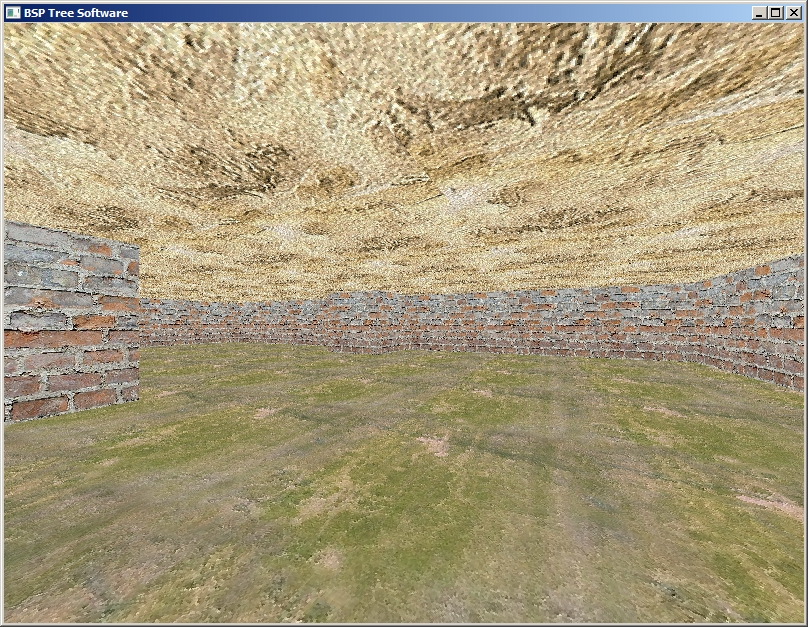

Загрузить архив с примерами ЗДЕСЬ.
В данном примере мы рассмотрим создание и отображение не сложной сцены, по сцене можно перемещаться с помощью клавиатуры и делать повороы камеры мышью, near plane clipping, backface culling, software triangle rasterization. Код примера можно загрузить /src/03.005-camera_soft_near_plane2/Camera_Soft_Near_Plane6 (более сложный способ отсечения по Z) и /src/03.005-camera_soft_near_plane2/Camera_Soft_Near_Plane7 (еще однин простой способ отсечения по Z - алгоритм аналогичный отсечению по экранным координатам, но разница- что это отсечение по Z).
После запуска примера перемещатся по сцене можно с помощью клавиш W,S,A,D и поворачивать камеру мышей.
В примере используется отсечение по передней плоскости просмотра. Оно осуществляется следующим способом: